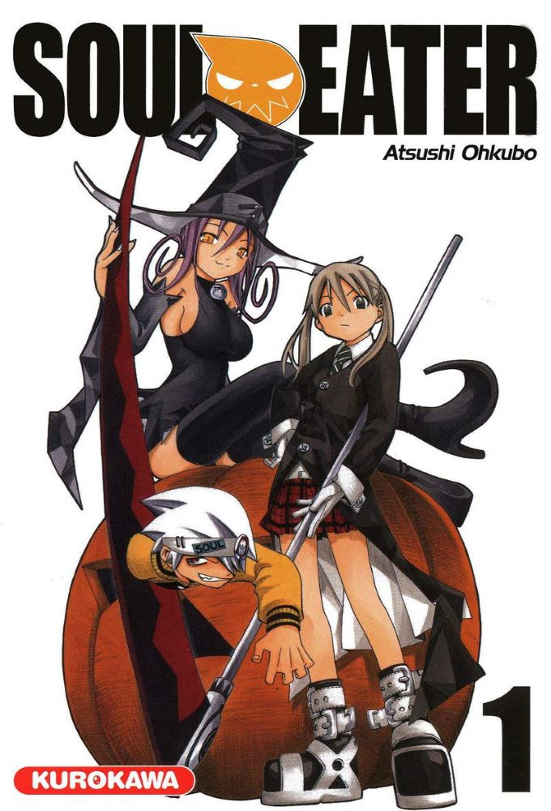

Soul Eater - tome 1
- Éditeur VF : Kurokawa (Kurokawa - Shonen)
- Éditeur VO : Square Enix
- Date de parution VO : 22/06/2004
- Date de parution VF : 12/03/2009
- Prix : 6.60 € / 420 ¥
- Nombre de pages : 192
- Illustrations : N&B
- Code ISBN : 9782351420553
- Auteur : Ohkubo Atsushi
- Traducteurs : Fabien Vautrin, Okazaki Maiko
- Type : Shonen
- Genres :Action - Aventure - Comédie – Fantastique
- Résumé :
Afin d'accéder au rang suprême de « Death Scythe », une arme démoniaque doit ingérer 99 âmes humaines et 1 âme de sorcière. Cette mission est confiée aux Meisters, des spécialistes du combat qui vont récolter les âmes au péril de leur propre vie.